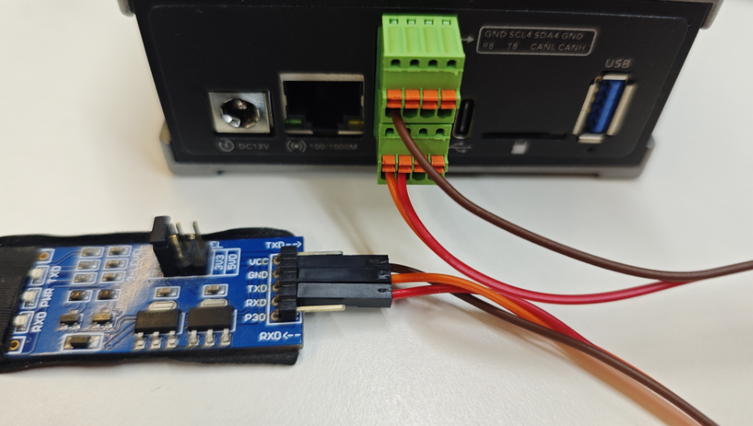
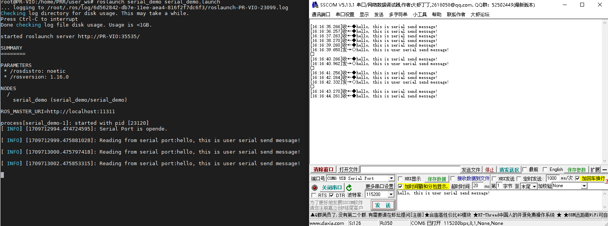

Viobot串口通信
下面我们来介绍Viobot的串口使用

1.接口定义
Viobot面有一个2*4pin的接口母座，接头我们发货的时候会放在盒子里面的。
我们可以看到第一排从左到右引脚分别是GND SCL SDA GND
第二排从左到右分别是RX TX CANL CANH
对应的设备号： 基础版串口为ttyS8 pro版串口为ttyS0
2.硬件连接
此处使用Viobot与windows电脑的串口调试助手作为例子。使用的是pro版，如果使用基础版只需要把Viobot的设备名称换一下即可。
我们先拿出一个市面上常用的串口转usb模块连接好Viobot和我们自己的电脑。GND连接好，Viobot的RX接模块的TX，Viobot的TX接模块的RX。

3.代码测试
这里我们使用比较方便的ROS串口库，当然也可以自己写串口通信，这里只是作为一个样例，尽量简单方便，因为Viobot出厂系统是自带了ROS环境的，即使开发者在主要开发时使用ROS，也可以根据这个教程直接使用Viobot的串口。
ROS版本
（1）安装ros-serial库
这个库前期出厂的设备没有默认安装，需要用户自己联网安装一下
sudo apt install ros-noetic-serial
（2）编译代码
将代码放到Viobot里面自己的工作空间里面编译，代码也比较简单，初始化一个串口对象，然后进到一个1hz的循环里面，循环里面读取串口接收数据和发送字符串。
#include <ros/ros.h>
#include <string>
#include <iostream>
#include <sstream>
#include <serial/serial.h>
#include <std_msgs/String.h>
serial::Serial my_serial;
int my_serial_init(const char* port,uint32_t baudrate){
my_serial.setPort(port);
my_serial.setBaudrate(baudrate);
serial::Timeout timeout = serial::Timeout::simpleTimeout(1000);
my_serial.setTimeout(timeout);
my_serial.setParity(serial::parity_t::parity_none);
my_serial.setBytesize(serial::bytesize_t::eightbits);
my_serial.setFlowcontrol(serial::flowcontrol_t::flowcontrol_none);
my_serial.setStopbits(serial::stopbits_t::stopbits_one);
try{
my_serial.open();
}
catch(const std::exception &e){
ROS_ERROR_STREAM("Unable to open port.");
return -1;
}
if(my_serial.isOpen()){
ROS_INFO_STREAM("Serial Port is opende.\n");
}
else{
ROS_ERROR_STREAM("Unable to open port.");
return -1;
}
return 0;
}
int main(int argc,char **argv){
ros::init(argc,argv,"serial_demo");
ros::NodeHandle nh;
my_serial_init("/dev/ttyS0",115200);//base版是/dev/ttyS8
ros::Rate loop_rate(1);
while(ros::ok()){
size_t n = my_serial.available();
if(n!=0){
std_msgs::String msg_s;
msg_s.data = my_serial.read(my_serial.available());
//这里是把1秒内所有接收到的数据全部打印出来
//用户可以自定根据接收到的数据进行自己的处理
ROS_INFO_STREAM("Reading from serial port:"<< msg_s.data);
}
std::string msg = "hello, this is viobot serial send message!";
my_serial.write(msg.c_str());
loop_rate.sleep();
}
return 0;
}
(3)效果展示
source ./devel/setup.bash
roslaunch serial_demo serial_demo.launch
代码实现的效果比较简单，就是单纯的每秒通过串口发送一串字符串到电脑，电脑手动发送字符串给Viobot，每秒钟打印一次。

ROS2版本
（1）安装ros-serial库
在ROS中可以直接安装官方提供的serial库，直接可用APT下载，而在ROS2中需要自行下载源码移植
sudo apt install ros-humble-serial-driver
（2）编译代码
cd user_ws/src/serial_demo/extern_lib/serial/build
rm -r *
cmake ..
sudo make install
sudo ldconfig
cd ../../../../..
colcon build
将代码放到Viobot里面自己的工作空间里面编译，代码也比较简单，初始化一个串口对象，然后进到一个1hz的循环里面，循环里面读取串口接收数据和发送字符串。
#include "rclcpp/rclcpp.hpp"
#include "std_msgs/msg/string.hpp"
#include "serial/serial.h"
class Serial_node : public rclcpp::Node{
public:
Serial_node(const std::string& name):Node(name){
my_serial_init("/dev/ttyS0",115200);
timer_ = this->create_wall_timer(std::chrono::milliseconds(1000), std::bind(&Serial_node::timer_callback, this));
}
private:
void timer_callback(){
std::string msg = "hello, this is viobot serial send message!";
my_serial_.write(msg.c_str());
size_t n = my_serial_.available();
if(n!=0){
std::string msg_s;
msg_s = my_serial_.read(my_serial_.available());
RCLCPP_INFO(this->get_logger(), "Reading from serial port:%s", msg_s.c_str());
}
}
int my_serial_init(const char* port,uint32_t baudrate){
my_serial_.setPort(port);
my_serial_.setBaudrate(baudrate);
serial::Timeout timeout = serial::Timeout::simpleTimeout(1000);
my_serial_.setTimeout(timeout);
my_serial_.setParity(serial::parity_t::parity_none);
my_serial_.setBytesize(serial::bytesize_t::eightbits);
my_serial_.setFlowcontrol(serial::flowcontrol_t::flowcontrol_none);
my_serial_.setStopbits(serial::stopbits_t::stopbits_one);
try{
my_serial_.open();
}
catch(const std::exception &e){
RCLCPP_ERROR(this->get_logger(),"Unable to open port.");
return -1;
}
if(my_serial_.isOpen()){
RCLCPP_INFO(this->get_logger(),"Serial Port is opende.\n");
}
else{
RCLCPP_ERROR(this->get_logger(),"Unable to open port.");
return -1;
}
return 0;
}
serial::Serial my_serial_;
rclcpp::TimerBase::SharedPtr timer_;
};
int main(int argc, char **argv){
rclcpp::init(argc,argv);
auto node = std::make_shared<Serial_node>("serial_demo");
rclcpp::spin(node);
rclcpp::shutdown();
return 0;
}
(3)效果展示
source ./install/setup.bash
ros2 run serial_demo serial_demo
代码实现的效果比较简单，就是单纯的每秒通过串口发送一串字符串到电脑，电脑手动发送字符串给Viobot，每秒钟打印一次。